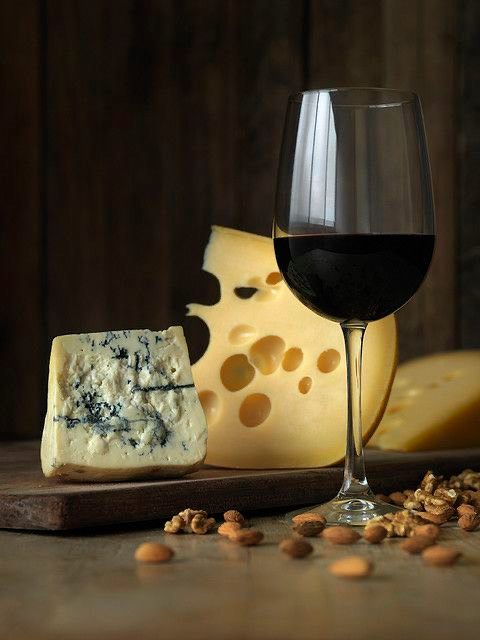

<!DOCTYPE html>
<html>
<head>
<title>Ostemanden</title>
<meta name="viewport" content="width=device-width, initial-scale=1">
<link rel="stylesheet" href="https://cdnjs.cloudflare.com/ajax/libs/font-awesome/4.7.0/css/font-awesome.min.css">
</head>
<body>
		<i class="fa fa-shopping-cart" style="font-size:48px;color:black"></i>
	<br>
</body>
	</html>

<!DOCTYPE html PUBLIC "-//W3C//DTD XHTML 1.0 Strict//EN" "http://www.w3.org/TR/xhtml1/DTD/xhtml1-strict.dtd">
<!--
Design by TEMPLATED
http://templated.co
Released for free under the Creative Commons Attribution License

Name       : Surround
Description: A two-column, fixed-width design with dark color scheme.
Version    : 1.0
Released   : 20120617

-->

<html xmlns="http://www.w3.org/1999/xhtml">
<head>
<meta name="keywords" content="" />
<meta name="description" content="" />
<meta http-equiv="content-type" content="text/html; charset=utf-8" />
<title> Ostemanden</title>
<link href="http://fonts.googleapis.com/css?family=Abel" rel="stylesheet" type="text/css" />
<link href="style.css" rel="stylesheet" type="text/css" media="screen" />
<style type="text/css">
@import "gallery.css";
</style>
</head>
<body>

<div id="wrapper">
	<div id="header-wrapper">
		<div id="header">
			<div id="menu1">
				<ul>

					<li class="active"><a href="oste.html">Oste</a></li>
					<li><a href="delikatesser.html">Delikatesser</a></li>
				</ul>
			</div>
			<div id="logo">
				<h1><a href="index.html"> Ostemanden</a></h1>
				<p>Det gode håndværk ligger i smagen</a></p>
			</div>
			<div id="menu2">
				<ul>
					<li class="active"> <a href="vin.html">Vin</a></li>
					<li><a href="om os.html">Om os</a></li>

				</ul>
			</div>

		</div>
		<!-- end #header -->
	</div>
	<div id="welcome">
		<h2 class="title"><a href="#">Velkommen  </a></h2>
		<div class="entry">
			<p> "Ostemanden fra Vindblæs" startede i 1959, som et supplement til Christian Baadsgaards købmandshandel. Han købte osteforretningen, fordi en af hans venner, ville være ostemand, men ikke havde pengene at sætte deri. Det gjorde Christian så, men vennen havde så ikke modet til at starte som ostemand alligevel, derfor blev Christian Baadsgaard Ostemand.
Christian Baadsgaard sagde altid, at det havde han aldrig fortrudt! Vi har et ostelager, hvor vi lagrer vores oste. Det vil sige, at vi modner ostene, så de bliver rigtige gode i smag og kvalitet. Vi har altid en temperatur på mellem 9 og 11 grader og det er den helt rette temperatur for at modne ostene på. Det er vigtigt, at det er stabilt. Både hvad angår temperatur og fugtighed. Det giver en fantastisk god smag og kvalitet.
Det er det kunderne gerne vil have, for det kan man ikke købe i supermarkedet</p>
		</div>
	</div>

	<!-- end #page -->
	<div id="page">
		<div id="page-bgtop">
			<div id="page-bgbtm">
				<div id="content">
					<div class="post">
						<h2 class="title"><a href="#">Betina </a></h2>
						<div class="entry">
							<p>  </p>
						</div>
					</div>
				</div>
				<!-- end #content -->
				<div id="sidebar">
					<ul>
						<li>
							<h2>Vores Personale</h2>
							<ul>
								<li><a href="#">Betina, Ostemutter</a></li>
								<li><a href="#">Geo, Salgsassistent</a></li>
								<li><a href="#">Mona, Salgsassistent</a></li>
								<li><a href="#">Lene, Salgsassistent</a></li>
								<li><a href="#">Else, Salgsassistent</a></li>
								<li><a href="#">Jan, Alt-muligmand</a></li>
							</ul>
						</li>
					</ul>
				</div>
				<!-- end #sidebar -->
				<div style="clear: both;">&nbsp;</div>
			</div>
		</div>
	</div>
	<div id="splash">
		<ul>
			<li class="first"></li>
			<li></li>
			<li></li>
			<li></li>
		</ul>
	</div>
	<!-- end #menu -->
	
</body>
</html>
